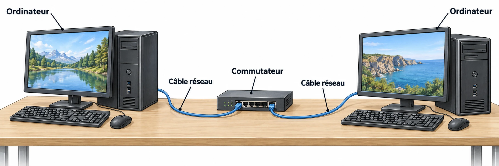

OBSERVER · EXPÉRIMENTER · EXPLIQUER
Un capteur rejoint le réseau
Le masque du réseau est fixé. Change une adresse sans toucher au vrai réseau du collège.

✎ Garde ta feuille à côté de toi.Prévois sur papier → manipule → observe → rédige sur papier.
Des observations pour expliquer
- Q2–Q4 : prévois, teste, puis explique le sous-réseau et le doublon.
- Q1 : dessine aussi le routeur vers un autre réseau sur ta feuille.
Appuie ton explication sur une valeur, un changement observé ou une comparaison. Distingue ce que montre le modèle et ce qui reste à vérifier.